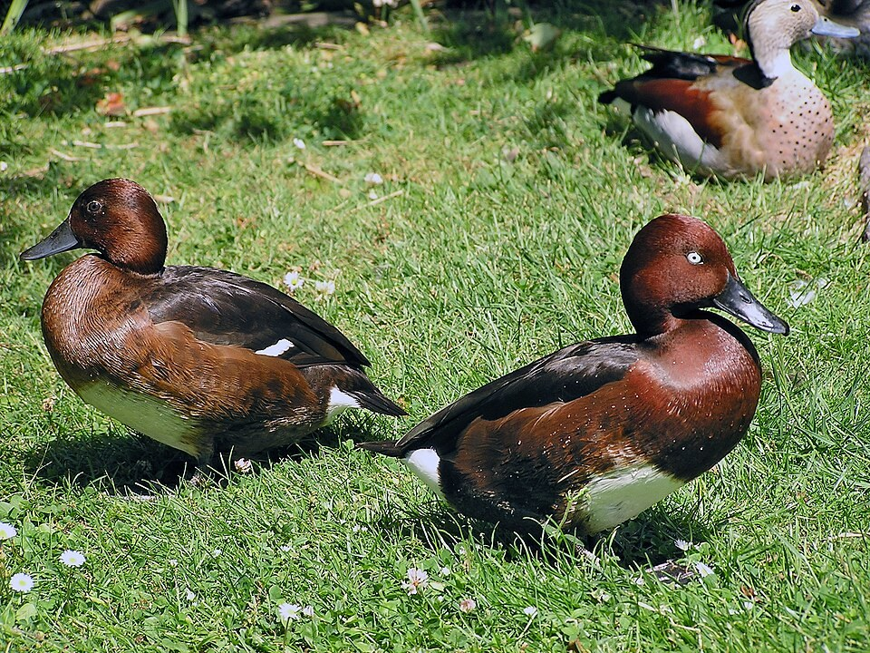

メジロガモ
目白鴨 ／ Aythya nyroca
特徴・生態
深みのある濃い栗褐色の羽毛と、尾羽の下側にある鮮やかな純白の三角形模様、そして名前（目白鴨）の由来となった白い虹彩が特徴の小型潜水ガモです。本来はユーラシア大陸西部を中心に分布しています。
大濠公園との関わり
1990年代初頭の冬、珍しい迷鳥として遠く離れた福岡の大濠公園に飛来し、越冬した記録は全国の野鳥ファンの間で大きな話題となりました。その後は九州沿岸でまれに記録されることはあるものの、大濠公園での定期的な姿は見られなくなっています。